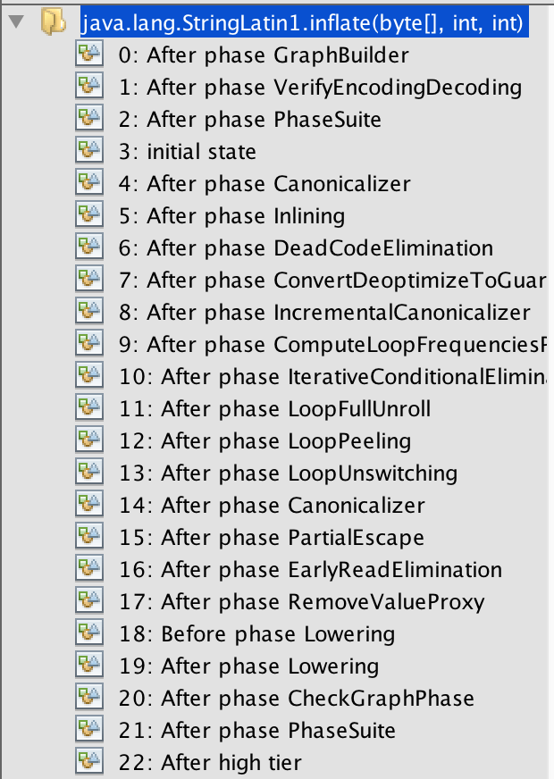

34 | Graal：用Java编译Java
最后这三篇文章，我将介绍 Oracle Labs 的 GraalVM 项目。
GraalVM 是一个高性能的、支持多种编程语言的执行环境。它既可以在传统的 OpenJDK 上运行，也可以通过 AOT（Ahead-Of-Time）编译成可执行文件单独运行，甚至可以集成至数据库中运行。
除此之外，它还移除了编程语言之间的边界，并且支持通过即时编译技术，将混杂了不同的编程语言的代码编译到同一段二进制码之中，从而实现不同语言之间的无缝切换。
今天这一篇，我们就来讲讲 GraalVM 的基石 Graal 编译器。
在之前的篇章中，特别是介绍即时编译技术的第二部分，我们反反复复提到了 Graal 编译器。这是一个用 Java 写就的即时编译器，它从 Java 9u 开始便被集成自 JDK 中，作为实验性质的即时编译器。
Graal 编译器可以通过 Java 虚拟机参数-XX:+UnlockExperimentalVMOptions -XX:+UseJVMCICompiler启用。当启用时，它将替换掉 HotSpot 中的 C2 编译器，并响应原本由 C2 负责的编译请求。
在今天的文章中，我将详细跟你介绍一下 Graal 与 Java 虚拟机的交互、Graal 和 C2 的区别以及 Graal 的实现细节。
Graal 和 Java 虚拟机的交互
我们知道，即时编译器是 Java 虚拟机中相对独立的模块，它主要负责接收 Java 字节码，并生成可以直接运行的二进制码。
具体来说，即时编译器与 Java 虚拟机的交互可以分为如下三个方面。
- 响应编译请求；
- 获取编译所需的元数据（如类、方法、字段）和反映程序执行状态的 profile；
- 将生成的二进制码部署至代码缓存（code cache）里。
即时编译器通过这三个功能组成了一个响应编译请求、获取编译所需的数据，完成编译并部署的完整编译周期。
传统情况下，即时编译器是与 Java 虚拟机紧耦合的。也就是说，对即时编译器的更改需要重新编译整个 Java 虚拟机。这对于开发相对活跃的 Graal 来说显然是不可接受的。
为了让 Java 虚拟机与 Graal 解耦合，我们引入了Java 虚拟机编译器接口（JVM Compiler Interface，JVMCI），将上述三个功能抽象成一个 Java 层面的接口。这样一来，在 Graal 所依赖的 JVMCI 版本不变的情况下，我们仅需要替换 Graal 编译器相关的 jar 包（Java 9 以后的 jmod 文件），便可完成对 Graal 的升级。
JVMCI 的作用并不局限于完成由 Java 虚拟机发出的编译请求。实际上，Java 程序可以直接调用 Graal，编译并部署指定方法。
Graal 的单元测试便是基于这项技术。为了测试某项优化是否起作用，原本我们需要反复运行某一测试方法，直至 Graal 收到由 Java 虚拟机发出针对该方法的编译请求，而现在我们可以直接指定编译该方法，并进行测试。我们下一篇将介绍的 Truffle 语言实现框架，同样也是基于这项技术的。
Graal 和 C2 的区别
Graal 和 C2 最为明显的一个区别是：Graal 是用 Java 写的，而 C2 是用 C++ 写的。相对来说，Graal 更加模块化，也更容易开发与维护，毕竟，连 C2 的作者 Cliff Click 大神都不想重蹈用 C++ 开发 Java 虚拟机的覆辙。
许多开发者会觉得用 C++ 写的 C2 肯定要比 Graal 快。实际上，在充分预热的情况下，Java 程序中的热点代码早已经通过即时编译转换为二进制码，在执行速度上并不亚于静态编译的 C++ 程序。
再者，即便是解释执行 Graal，也仅是会减慢编译效率，而并不影响编译结果的性能。
换句话说，如果 C2 和 Graal 采用相同的优化手段，那么它们的编译结果是一样的。所以，程序达到稳定状态（即不再触发新的即时编译）的性能，也就是峰值性能，将也是一样的。
由于 Java 语言容易开发维护的优势，我们可以很方便地将 C2 的新优化移植到 Graal 中。反之则不然，比如，在 Graal 中被证实有效的部分逃逸分析（partial escape analysis）至今未被移植到 C2 中。
Graal 和 C2 另一个优化上的分歧则是方法内联算法。相对来说，Graal 的内联算法对新语法、新语言更加友好，例如 Java 8 的 lambda 表达式以及 Scala 语言。
我们曾统计过数十个 Java 或 Scala 程序的峰值性能。总体而言，Graal 编译结果的性能要优于 C2。对于 Java 程序来说，Graal 的优势并不明显；对于 Scala 程序来说，Graal 的性能优势达到了 10%。
大规模使用 Scala 的 Twitter 便在他们的生产环境中部署了 Graal 编译器，并取得了 11% 的性能提升。（Slides, Video，该数据基于 GraalVM 社区版。）
Graal 的实现
Graal 编译器将编译过程分为前端和后端两大部分。前端用于实现平台无关的优化（如方法内联），以及小部分平台相关的优化；而后端则负责大部分的平台相关优化（如寄存器分配），以及机器码的生成。
在介绍即时编译技术时，我曾提到过，Graal 和 C2 都采用了 Sea-of-Nodes IR。严格来说，这里指的是 Graal 的前端，而后端采用的是另一种非 Sea-of-Nodes 的 IR。通常，我们将前端的 IR 称之为 High-level IR，或者 HIR；后端的 IR 则称之为 Low-level IR，或者 LIR。
Graal 的前端是由一个个单独的优化阶段（optimization phase）构成的。我们可以将每个优化阶段想象成一个图算法：它会接收一个规则的图，遍历图上的节点并做出优化，并且返回另一个规则的图。前端中的编译阶段除了少数几个关键的之外，其余均可以通过配置选项来开启或关闭。

Graal 编译器前端的优化阶段（局部）
感兴趣的同学可以阅读 Graal repo 里配置这些编译优化阶段的源文件 HighTier.java，MidTier.java，以及LowTier.java。
我们知道，Graal 和 C2 都采用了激进的投机性优化手段（speculative optimization）。
通常，这些优化都基于某种假设（assumption）。当假设出错的情况下，Java 虚拟机会借助去优化（deoptimization）这项机制，从执行即时编译器生成的机器码切换回解释执行，在必要情况下，它甚至会废弃这份机器码，并在重新收集程序 profile 之后，再进行编译。
举个以前讲过的例子，类层次分析。在进行虚方法内联时（或者其他与类层次相关的优化），我们可能会发现某个接口仅有一个实现。
在即时编译过程中，我们可以假设在之后的执行过程中仍旧只有这一个实现，并根据这个假设进行编译优化。当之后加载了接口的另一实现时，我们便会废弃这份机器码。
Graal 与 C2 相比会更加激进。它从设计上便十分青睐这种基于假设的优化手段。在编译过程中，Graal 支持自定义假设，并且直接与去优化节点相关联。
当对应的去优化被触发时，Java 虚拟机将负责记录对应的自定义假设。而 Graal 在第二次编译同一方法时，便会知道该自定义假设有误，从而不再对该方法使用相同的激进优化。
Java 虚拟机的另一个能够大幅度提升性能的特性是 intrinsic 方法，我在之前的篇章中已经详细介绍过了。在 Graal 中，实现高性能的 intrinsic 方法也相对比较简单。Graal 提供了一种替换方法调用的机制，在解析 Java 字节码时会将匹配到的方法调用，替换成对另一个内部方法的调用，或者直接替换为特殊节点。
举例来说，我们可以把比较两个 byte 数组的方法java.util.Arrays.equals(byte[],byte[])替换成一个特殊节点，用来代表整个数组比较的逻辑。这样一来，当前编译方法所对应的图将被简化，因而其适用于其他优化的可能性也将提升。
总结与实践
Graal 是一个用 Java 写就的、并能够将 Java 字节码转换成二进制码的即时编译器。它通过 JVMCI 与 Java 虚拟机交互，响应由后者发出的编译请求、完成编译并部署编译结果。
对 Java 程序而言，Graal 编译结果的性能略优于 OpenJDK 中的 C2；对 Scala 程序而言，它的性能优势可达到 10%（企业版甚至可以达到 20%！）。这背后离不开 Graal 所采用的激进优化方式。
今天的实践环节，你可以尝试使用附带 Graal 编译器的 JDK。在 Java 10，11 中，你可以通过添加虚拟机参数-XX:+UnlockExperimentalVMOptions -XX:+UseJVMCICompiler来启用，或者下载我们部署在Oracle OTN上的基于 Java 8 的版本。
在刚开始运行的过程中，Graal 编译器本身需要被即时编译，会抢占原本可用于编译应用代码的计算资源。因此，目前 Graal 编译器的启动性能会较差。最后一篇我会介绍解决方案。